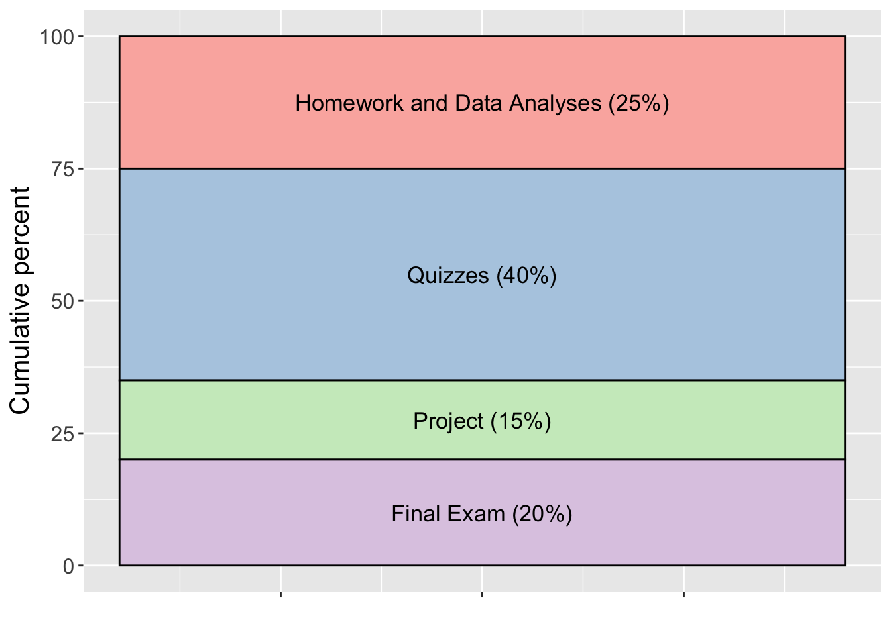

STAT 439 will provide an introduction to the principles and general methods for the analysis of categorical data. Categorical data occur extensively in both observational and experimental studies, as well as in industrial and data science applications. Topics include, but are not limited to, contingency table analysis, Poisson regression, logistic regression, log-linear models, and multicategory logit models. While some theoretical statistical detail is given, the primary focus will be on methods of data analysis. Problems will be motivated from a scientific perspective.
At the completion of this course, students will:
TR 9:25-10:40am
Wilson Hall 1-143
Dr. Stacey Hancock
email: stacey.hancock@montana.edu
Office: Wilson 2-195
Phone: (406) 994-5350
Entrance to STAT 439 requires completion of STAT 412 or STAT 512 (Methods for Data Analysis II). Students may take STAT 412/512 concurrently with permission of the instructor.
The required textbook for the course is Alan Agresti’s An Introduction to Categorical Data Analysis, 3rd edition, Wiley, 2018.
Important: Agresti has another textbook called Categorical Data Analysis. Make sure you are using his book that starts with “An Introduction…”.
We will use the statistical programming language R through the RStudio interface. See my statistical computing resources page for download instructions and extra resources.
For announcements, grades, discussion forums, and turning in assignments, see our D2L page.
Your grade in STAT 408 will be comprised of the following components.

Homework (25%): Homework and data analysis problems will be assigned approximately bi-weekly.
Quizzes (40%): In lieu of midterm exams, we will have bi-weekly 30-minute in-class quizzes over material from the past two weeks. The lowest quiz grade will be dropped.
Project (15%): A group data analysis project will be completed throughout the course. Due dates and details will be posted in D2L.
Final Exam (20%): We will have a comprehensive in-class final exam on Thursday, May 12, 8:00–9:50am in our usual classroom.
Letter grades generally follow the typical scale:
93-100 = A
90-92 = A-
88-89 = B+
83-87 = B
80-82 = B-
etc.
These cutoffs may be adjusted down (never up!) at the end of the semester, depending on the grade distribution in the course. Thus, a 93% will guarantee an A, a 90% will guarantee an A-, etc.
All members of the classroom community (instructor, students, visitors) are expected to treat each other with courtesy and respect. Our comments to others should be factual, constructive, and free from harassing statements. You are encouraged to disagree with others, but such disagreements need to be based upon facts and documentation (rather than prejudices and personalities). It is the instructor’s goal to promote an atmosphere of mutual respect in the classroom.
The success of all students in this course depends on all members of the classroom community agreeing to:
Please contact the instructor if you have suggestions for improving the classroom environment.
You will note that attendance is not a required component of your grade. However, there is no better predictor of college grades than class attendance (Crede, Roch, & Kieszczynka, 2010). In order to participate in class discussions and build a complete classroom community, please plan to attend every class. If you are ill or have a conflict, an email letting me know you won’t be in class is appreciated.
It is expected that students turn in homework by the posted deadline, but understood that life sometimes prevents us from meeting a deadline. Thus, homework will be accepted after the deadline for no penalty up until the point that homework solutions are posted. After homework solutions are posted, you may still earn half credit on your homework by turning in your completed assignment with extended explanations added to each problem. Extended explanations are required to demonstrate that you fully understand each problem and are not just mimicking the posted solutions. Late assignments which directly copy the posted solutions will be treated as plagiarism and will receive no credit.
The last quiz day of the semester will be a designated make-up quiz. Only students who had to miss a quiz earlier in the semester will be allowed to take this quiz, and the grade from this quiz will serve as the grade for your missed quiz. As an added tool to address missed quizzes, the lowest quiz grade will be dropped.
At a minimum, any act of academic dishonesty, which includes but is not limited to plagiarism, cheating, multiple submissions, or facilitating others’ misconduct, will result in a score of zero on the assignment/quiz/exam in question and notification of department and university officials. Further action may be taken as warranted. If you have any questions about the limits of collaboration or about using and citing sources, you are expected to ask for clarification.
After attempting to complete homework problems on your own, you are permitted to collaborate on homework in a constructive manner for all involved—each individual in the collaboration needs to ensure they understand and could explain the process of solving each problem. While I encourage you to talk through problems with fellow students, the work you turn in must be your own and must be written in your own words (unless the assignment specifically states otherwise).
Each homework will require a “citations” page where you cite all sources (including web forums such as Stack Overflow) and individuals used to complete that homework assignment. Paraphrasing or quoting another’s work without citing the source is a form of academic dishonesty. Even inadvertent or unintentional misuse or appropriation of another’s work (such as relying heavily on source material that is not expressly acknowledged) is considered plagiarism. Homework assignments that do not cite sources or individuals, or assignments where answers are copied directly from another student, will be considered and treated as plagiarism, and will receive a zero grade.
Guidance on Citing Sources:
If you have any questions about the limits of collaboration or about using and citing sources, you are expected to ask for clarification.
Students in an academic setting are responsible for approaching all assignments with rigor, integrity, and in compliance with the University Code of Student Conduct. This responsibility includes:
More information about Academic Misconduct from the Dean of Students
Respect for Diversity: It is our intent that students from all diverse backgrounds and perspectives be well-served by this course, that students’ learning needs be addressed both in and out of class, and that the diversity that students bring to this class be viewed as a resource, strength and benefit. It is our intent to present materials and activities that are respectful of diversity: gender identity, sexual orientation, disability, age, socioeconomic status, ethnicity, race, religion, culture, perspective, and other background characteristics. Your suggestions about how to improve the value of diversity in this course are encouraged and appreciated. Please let us know ways to improve the effectiveness of the course for you personally or for other students or student groups.
In addition, in scheduling exams, we have attempted to avoid conflicts with major religious holidays. If, however, we have inadvertently scheduled an exam or major deadline that creates a conflict with your religious observances, please let us know as soon as possible so that we can make other arrangements.
Support for Inclusivity: We support an inclusive learning environment where diversity and individual differences are understood, respected, appreciated, and recognized as a source of strength. We expect that students, faculty, administrators and staff at MSU will respect differences and demonstrate diligence in understanding how other peoples’ perspectives, behaviors, and worldviews may be different from their own.